B2B Product Design (Agentic)
AI Research Assistant
Lead Product Designer, 0→1 · Timeframe: 3 months · Team: 2 designers, 3 engineers, 1 PM
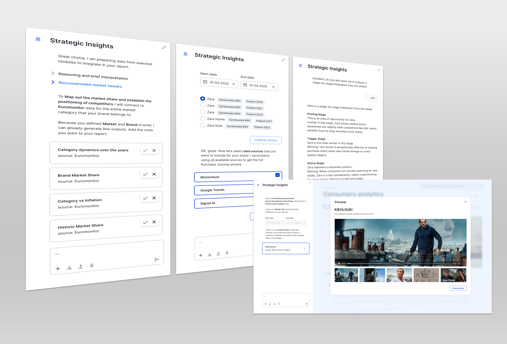
The Problem
Fragmented tools that couldn't talk to each other
The advertising stack had grown into a set of tools that each worked well alone and not at all together. Every module pulled from a different data source, with its own schema and its own granularity. A media planner with a question had to already know which tool held the answer before they could ask it. Leadership wanted "an AI chat." I pushed back on the framing.
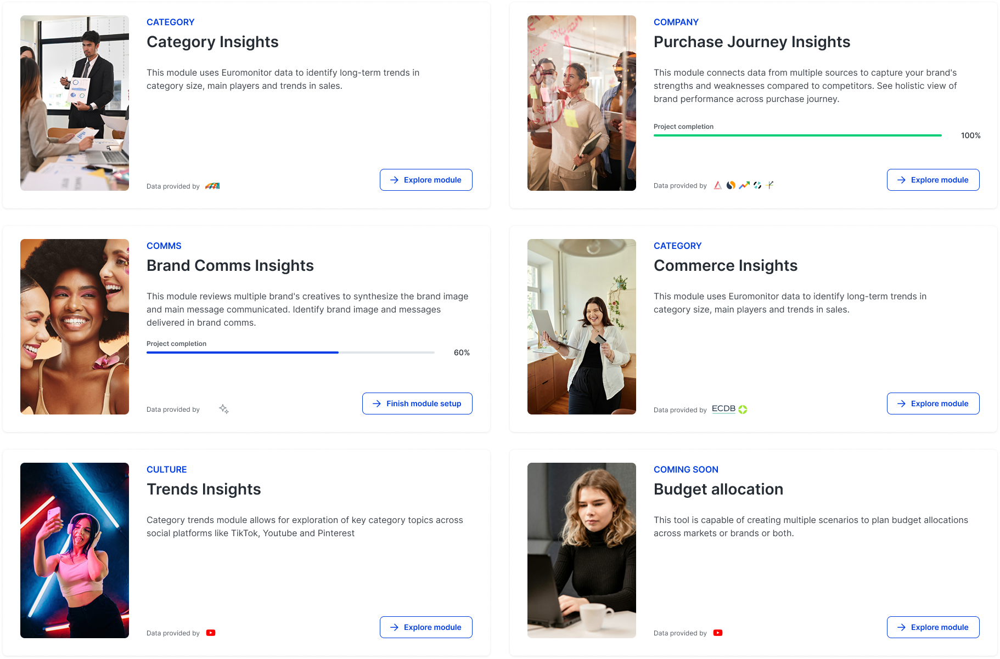
Fragmented tools and data sources
The Real Question
How does AI know which data answers which question?
A chat box sitting on top of fragmented data just moves the problem. The AI answers confidently from whichever source it reaches first. The real question wasn't "how do we build a chat," it was "how does the AI know which data answers which question?" That reframing set the constraint for everything after: we needed a routing and synthesis layer underneath, not a UI wrapper, and each module would need its own agent.
The Constraint
Build it right or ship it fast — I needed both
That created a tension I had to resolve. The version that solved the problem properly — every tool surfaced through the AI, agents reasoning across all sources, clarifying questions narrowing enormous datasets was a multi-quarter build. The business needed something in users' hands quickly. Designing only the end state would have produced a beautiful prototype nobody could ship.
Two Targets
A north star vision and a shippable MVP
So I split the design into two deliberately different targets. For the long-term vision, I designed the full agentic system: every tool exposed through AI responses, clarifying questions doing double duty, sharpening each answer while filtering the datasets running underneath. That became the north star engineering and leadership aligned around.
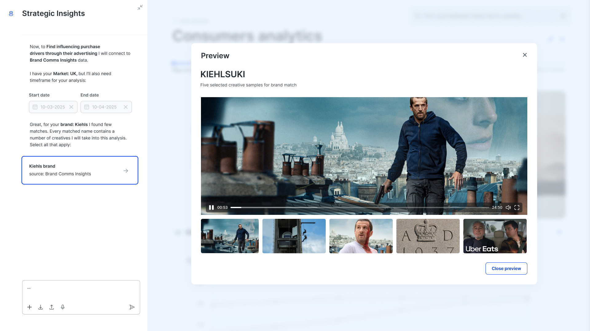
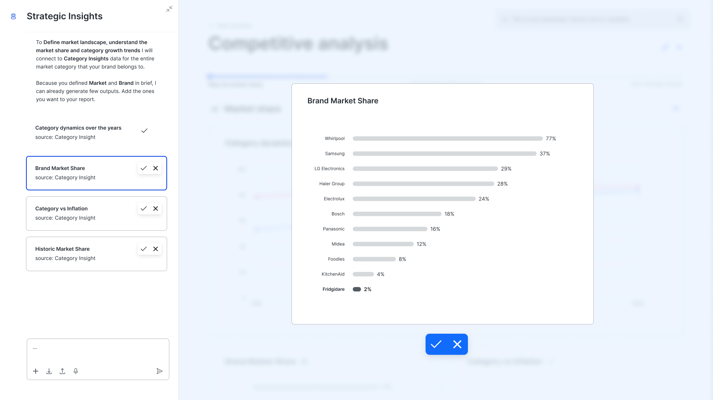
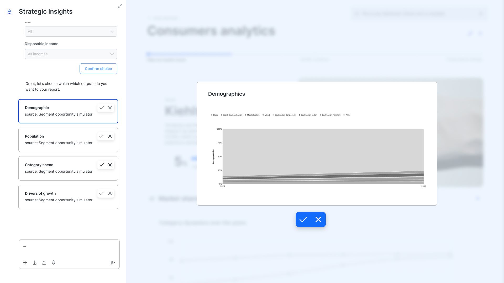
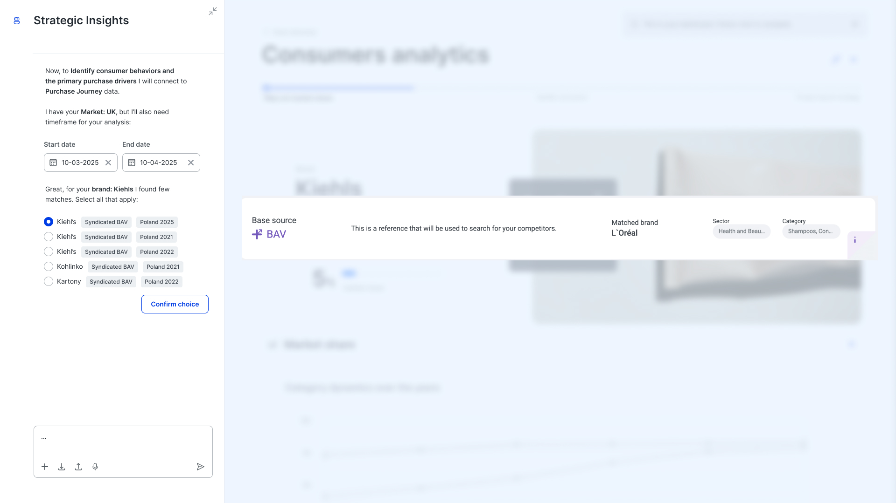
Long-term vision: full agentic system with cross-source reasoning
The MVP
One working path instead of everything at once
For the short-term MVP, I traded breadth for one working path. Instead of every module wired to its own agent, we shipped a single AI Research Assistant with a guided experience: users could ask anything, or start from deterministic prompts we'd pulled from prior research — the questions planners and analysts already asked most.
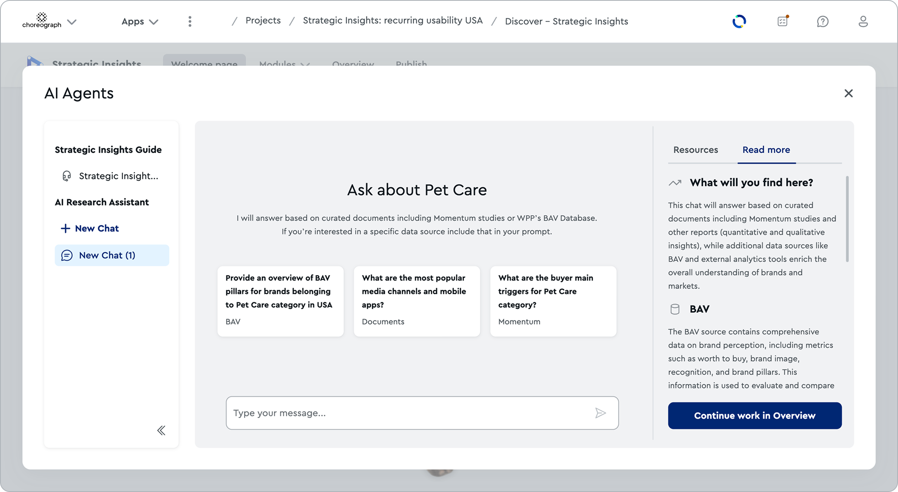
Shipped MVP: single assistant with guided routing
What I gave up at launch was full cross-source reasoning. What I kept, deliberately, was the clarifying question mechanism. It was the piece that made the MVP feel intelligent rather than scripted, and it was the same mechanism the long-term system would scale on. The MVP wasn't a throwaway; it was the first vertical slice of the real architecture.
Institutional Knowledge
Turning tacit expertise into actionable intelligence
To make the routing trustworthy, we documented institutional knowledge as scripts, mapping the input a planner would type to the output the AI should return sourced directly from media planners, analysts, and strategists, turning this human expertise into something the AI system could act on.
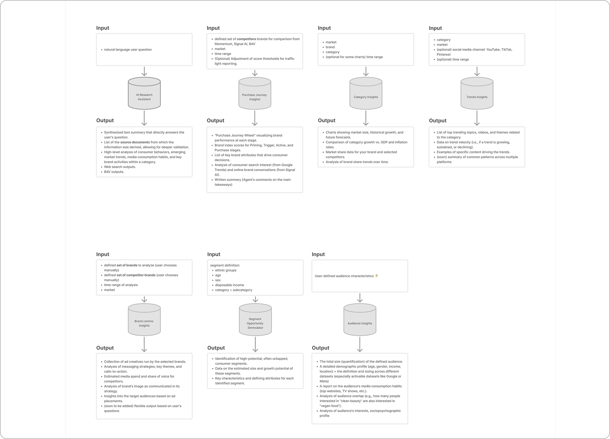
Institutional knowledge mapped as input-output scripts across seven agent modules
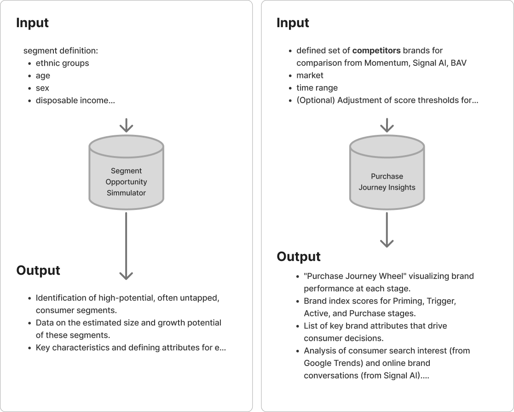
Example scripts showing how Segment Opportunity Simulator and Purchase Journey Insights agents parse inputs and return outputs
Trust & Transparency
Every answer backed by sources you can verify
In a tool people use to defend media investment, trust is everything. I designed the AI Research Assistant to be transparent about its reasoning. Every answer it returned was backed by sources, and users could check those sources before acting on the insight. I made transparency the default at the end. A Resources panel lists the exact reports the answer draws from, and inline citation markers tie specific claims back to specific documents, so a planner can check the AI's reasoning against the underlying research before acting on it.
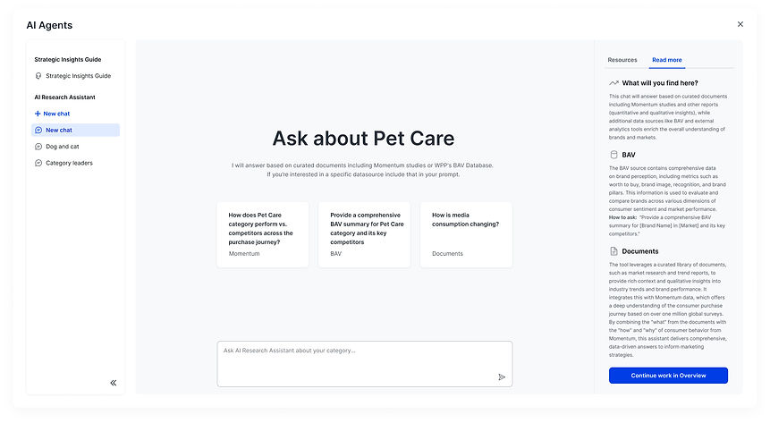
Research Assistant response with inline citations and Resources panel
Two Distinct Jobs
Orientation and analysis, deliberately separated
I also split two jobs that a single chatbot usually blurs. The Strategic Insights Guide answers "how do I use this platform and where does the data live," while the AI Research Assistant does the actual analysis. Keeping them distinct meant neither over promised. The Guide orients a new user without pretending to run analysis, and the Assistant stays focused on insight instead of hand-holding. It also gave people a low-stakes way to learn the tool before trusting it with a real question.
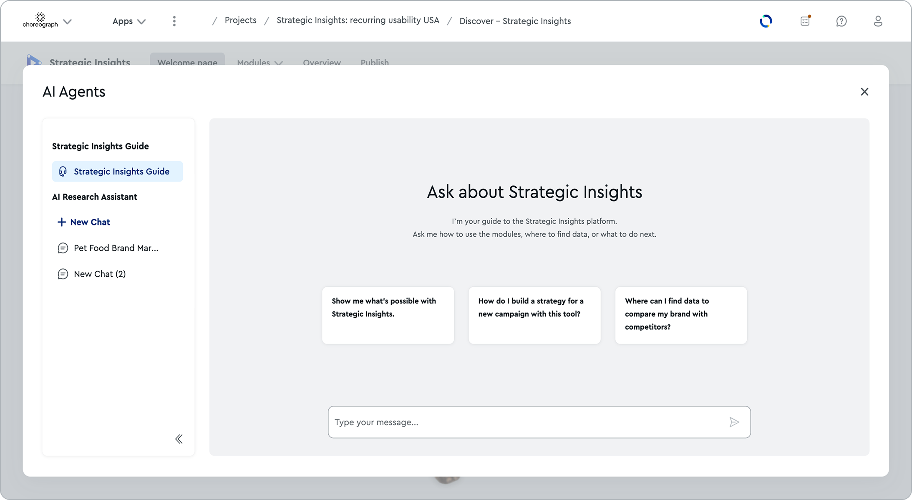
Strategic Insights Guide welcome state
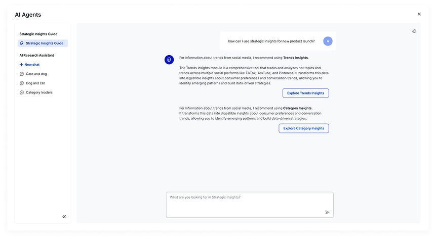
Guide explaining modules by category and company
Outcome
80% growth in active users, and insights that matter
We shipped the MVP in three months. Since launch, active users have grown 80%, and planners, researchers, and insight managers now reach for the AI Research Assistant in place of the manual, fragmented workflows they used before.
The clearest signal was in how they talked about it: one user noted that deep analysis across digital channels "will take an extreme amount of hours… this will help a lot," while another pointed to discovery rather than speed — "it helps us identify some opportunities that probably we are not necessarily seeing." Together those capture what the MVP was designed to do: collapse the time it takes to get an answer, and surface insights the old tool-by-tool workflow buried.